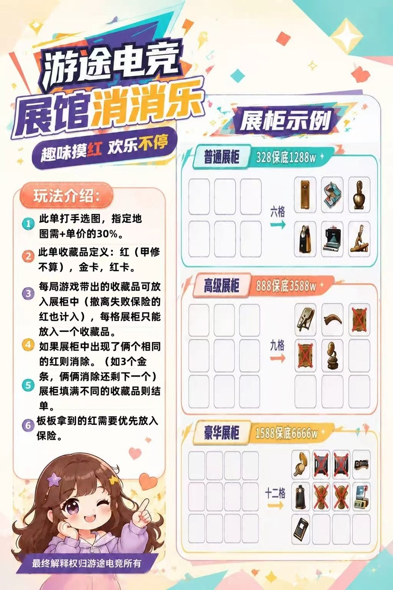
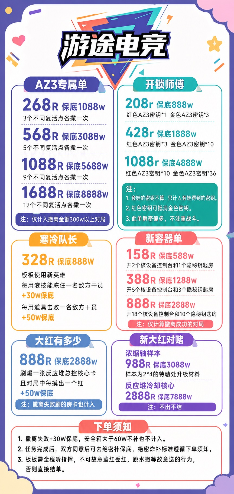
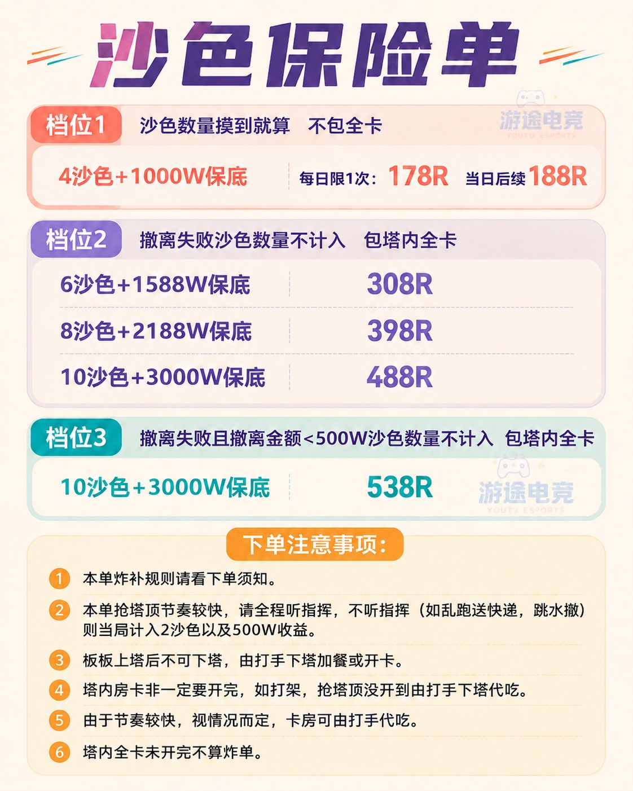

与上一家店完全分开。不是简单用保底÷价格，而是把任务结单条件、失败是否推进、长尾和末局超额一起纳入。默认数值使用近期高压环境作条件校准。
6格档价格最低，重复红又会被消掉，任务与保底并非同步完成；是这家店目前最值得优先研究的实用候选。
任务只在撤离成功时推进，对低撤离环境很友好；388档在价格、任务量与长尾之间更均衡。888档模型很高，但对“每次成功能开几个容器”的假设极敏感。
6/8/10沙色档都要求失败不计沙色，让任务与真实撤离绑定；488档单位价值和总量更均衡。538档价格更贵，却允许部分失败局推进沙色，反而会更快结束。
本质是“收集不同出生点”的coupon-collector问题。12点档潜在总收益更高，但尾部显著；9点档更适合作为实际购买。
最高档任务量大，单位价值优于低档；但失败局也可能推进密钥任务，而且红钥匙可抵金钥匙，会加快结单，所以不如“成功才推进”的玩法稳。
核心价值来自“不出不结”的稀有长尾。988元浓缩铀相对同类公开报价有吸引力；2888元冷却核心长尾更大、成本和履约风险也更高。
把红、金卡、红卡放进展柜；相同红成对消除。展柜最终必须留下足够多种不同收藏品才能结单。
6格档价格最低，重复红又会被消掉，任务与保底并非同步完成；是这家店目前最值得优先研究的实用候选。
| 档位 | 估算净W/元 | 中位 | P10–P90 | 均局数 | 250局内结单 |
|---|---|---|---|---|---|
| 展馆·6格 328元 · 目标1288W | 29.2 | 26.8 | 13.6–46.4 | 52 | 100% |
| 展馆·9格 888元 · 目标3588W | 18.4 | 17.2 | 10.2–27.9 | 92 | 100% |
| 展馆·12格 1588元 · 目标6666W | 15.7 | 15.0 | 9.0–24.0 | 140 | 95% |

AZ3容器任务。必须在撤离成功的对局里打开指定数量的核设备控制台和隐秘钥匙房。
任务只在撤离成功时推进，对低撤离环境很友好；388档在价格、任务量与长尾之间更均衡。888档模型很高，但对“每次成功能开几个容器”的假设极敏感。
| 档位 | 估算净W/元 | 中位 | P10–P90 | 均局数 | 250局内结单 |
|---|---|---|---|---|---|
| 新容器·2控1房 158元 · 目标588W | 27.7 | 23.5 | 9.2–51.2 | 25 | 100% |
| 新容器·5控3房 388元 · 目标1288W | 28.7 | 25.9 | 14.1–46.3 | 63 | 100% |
| 新容器·18控10房 888元 · 目标2888W | 37.1 | 36.5 | 25.7–49.5 | 182 | 84% |

巴别塔沙色保险箱数量任务＋保底。不同档位对失败局的沙色计数方式不同。
6/8/10沙色档都要求失败不计沙色，让任务与真实撤离绑定；488档单位价值和总量更均衡。538档价格更贵，却允许部分失败局推进沙色，反而会更快结束。
| 档位 | 估算净W/元 | 中位 | P10–P90 | 均局数 | 250局内结单 |
|---|---|---|---|---|---|
| 4沙色首单 178元 · 目标1000W | 8.4 | 7.4 | 4.8–12.8 | 8 | 100% |
| 4沙色当日续单 188元 · 目标1000W | 7.7 | 6.8 | 4.5–11.6 | 8 | 100% |
| 6沙色 308元 · 目标1588W | 19.0 | 17.5 | 9.9–29.3 | 32 | 100% |
| 8沙色 398元 · 目标2188W | 19.1 | 17.9 | 11.4–28.3 | 43 | 100% |
| 10沙色 488元 · 目标3000W | 19.7 | 18.8 | 12.5–27.6 | 53 | 100% |
| 10沙色·538档 538元 · 目标3000W | 17.9 | 17.0 | 11.2–25.9 | 54 | 100% |

从AZ3不同复活点出发，并在撤离金额至少300W的对局中成功撤离；每个出生点只记一次。
本质是“收集不同出生点”的coupon-collector问题。12点档潜在总收益更高，但尾部显著；9点档更适合作为实际购买。
| 档位 | 估算净W/元 | 中位 | P10–P90 | 均局数 | 250局内结单 |
|---|---|---|---|---|---|
| AZ3·3点 268元 · 目标1088W | 11.0 | 10.8 | 7.7–14.8 | 16 | 100% |
| AZ3·5点 568元 · 目标3088W | 9.4 | 9.2 | 6.7–12.6 | 31 | 100% |
| AZ3·9点 1088元 · 目标5688W | 12.0 | 11.6 | 8.4–16.0 | 73 | 100% |
| AZ3·12点 1688元 · 目标8888W | 14.9 | 14.1 | 9.7–21.1 | 141 | 96% |
在AZ3收集红色、金色密钥完成数量任务，再完成保底。红钥匙可以抵金钥匙。
最高档任务量大，单位价值优于低档；但失败局也可能推进密钥任务，而且红钥匙可抵金钥匙，会加快结单，所以不如“成功才推进”的玩法稳。
| 档位 | 估算净W/元 | 中位 | P10–P90 | 均局数 | 250局内结单 |
|---|---|---|---|---|---|
| 开锁·1红3金 208元 · 目标888W | 9.9 | 7.3 | 3.7–20.6 | 12 | 100% |
| 开锁·3红10金 428元 · 目标1888W | 10.9 | 9.2 | 4.1–20.0 | 27 | 100% |
| 开锁·10红36金 1088元 · 目标4888W | 13.2 | 12.6 | 6.8–20.3 | 81 | 100% |
指定AZ3新大红，保底打够后目标物没出也不能结束。
核心价值来自“不出不结”的稀有长尾。988元浓缩铀相对同类公开报价有吸引力；2888元冷却核心长尾更大、成本和履约风险也更高。
| 档位 | 估算净W/元 | 中位 | P10–P90 | 均局数 | 250局内结单 |
|---|---|---|---|---|---|
| 浓缩铀样本 988元 · 目标3088W | 11.6 | 7.6 | 2.9–26.2 | 64 | 98% |
| 反应堆冷却核心 2888元 · 目标7888W | 9.0 | 8.3 | 2.5–16.4 | 145 | 72% |
文档没有写清91折券能否覆盖所有趣味单、能否与其他优惠叠加，因此没有自动计入模型。确认可用后，高价单的实际成本会下降。
高压校准使用近期高压对局的成功/失败收益分布作为现金流，再叠加每个玩法的任务推进假设。密钥获取、容器开启、新大红出现率等没有可靠公开统计，所以这里只做“给定假设时”的条件测算。
P10–P90是当前假设下单次结果中间80%的范围，不是真实掉率的置信区间。极长尾档位若250局内仍有大量未结，不因累计金额大就自动列为首选。